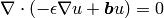
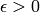
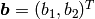
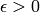
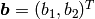
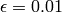

Linear Advection-Diffusion¶
Git reference: Example linear-advection-diffusion.
This example solves the equation

in the domain  where  is the diffusivity and 
a constant advection velocity. We assume that
where  is the diffusivity and 
a constant advection velocity. We assume that  and
and  . The boundary
conditions are Dirichlet, defined as follows:
. The boundary
conditions are Dirichlet, defined as follows:
// Essemtial (Dirichlet) boundary condition values.
scalar essential_bc_values(int ess_bdy_marker, double x, double y)
{
if (ess_bdy_marker == 1) return 1;
else return 2 - pow(x, 0.1) - pow(y, 0.1);
}
Here the boundary marker 1 corresponds to the bottom and left edges. With a small  , this is a singularly
perturbed problem whose solution is close to 1 in most of the domain and forms a thin boundary layer along the top
and right edges of
, this is a singularly
perturbed problem whose solution is close to 1 in most of the domain and forms a thin boundary layer along the top
and right edges of  .
.
Solution for . Note - view selected to show the boundary layer:

Bilinear weak form corresponding to the left-hand side of the equation:
// Bilinear form.
template<typename Real, typename Scalar>
Scalar bilinear_form(int n, double *wt, Func<Scalar> *u_ext[], Func<Real> *u, Func<Real> *v, Geom<Real> *e, ExtData<Scalar> *ext)
{
Scalar result = 0;
for (int i=0; i < n; i++)
{
result += wt[i] * (EPSILON * (u->dx[i]*v->dx[i] + u->dy[i]*v->dy[i])
- (B1 * u->val[i] * v->dx[i] + B2 * u->val[i] * v->dy[i])
);
}
return result;
}
Initial mesh for automatic adaptivity:

This mesh is not fine enough in the boundary layer region to prevent the solution from oscillating:

Here we use the same view as for the solution above. As you can see, this approximation is not very close to the final solution. The oscillations can be suppressed by applying the multiscale stabilization (STABILIZATION_ON = true):

Automatic adaptivity can sometimes take care of them as well, as we will see below. Standard stabilization techniques include SUPG, GLS and others. For this example, we implemented the so-called variational multiscale stabilization that can be used on an optional basis:
// bilinear form for the variational multiscale stabilization
template<typename Real, typename Scalar>
Scalar bilinear_form_stabilization(int n, double *wt, Func<Scalar> *u_ext[], Func<Real> *u,
Func<Real> *v, Geom<Real> *e, ExtData<Scalar> *ext)
{
#ifdef H2D_SECOND_DERIVATIVES_ENABLED
Real h_e = e->diam;
Scalar result = 0;
for (int i=0; i < n; i++) {
double b_norm = sqrt(B1*B1 + B2*B2);
Real tau = 1. / sqrt(9*pow(4*EPSILON/pow(h_e, 2), 2) + pow(2*b_norm/h_e, 2));
result += wt[i] * tau * (-B1 * v->dx[i] - B2 * v->dy[i] + EPSILON * v->laplace[i])
* (-B1 * u->dx[i] - B2 * u->dy[i] + EPSILON * u->laplace[i]);
}
return result;
#else
error("Define H2D_SECOND_DERIVATIVES_ENABLED in common.h if you want to use second
derivatives of shape functions in weak forms.");
#endif
}
We have also implemented a shock-capturing term for the reader to experiment with:
template<typename Real, typename Scalar>
Scalar bilinear_form_shock_capturing(int n, double *wt, Func<Scalar> *u_ext[], Func<Real> *u, Func<Real> *v,
Geom<Real> *e, ExtData<Scalar> *ext)
{
double h_e = e->diam();
double s_c = 0.9;
Scalar result = 0;
for (int i=0; i < n; i++) {
// This R makes it nonlinear! So we need to use the Newton method:
double R = fabs(B1 * u->dx[i] + B2 * u->dy[i]);
result += wt[i] * s_c * 0.5 * h_e * R *
(u->dx[i]*v->dx[i] + u->dy[i]*v->dy[i]) /
(sqrt(pow(u->dx[i], 2) + pow(u->dy[i], 2)) + 1.e-8);
}
return result;
}
The weak forms are registered as follows, note that the stabilization and shock capturing are turned off for this computation:
// Initialize the weak formulation.
WeakForm wf;
wf.add_matrix_form(callback(bilinear_form));
if (STABILIZATION_ON == true) {
wf.add_matrix_form(callback(bilinear_form_stabilization));
}
if (SHOCK_CAPTURING_ON == true) {
wf.add_matrix_form(callback(bilinear_form_shock_capturing));
}
Let us compare adaptive  -FEM with linear and quadratic elements and the
-FEM with linear and quadratic elements and the  -FEM.
-FEM.
Final mesh for -FEM with linear elements: 57495 DOF, error = 0.66 %

Final mesh for -FEM with quadratic elements: 4083 DOF, error = 0.37 %

Final mesh for -FEM: 1854 DOF, error = 0.28 %
Convergence graphs of adaptive h-FEM with linear elements, h-FEM with quadratic elements and hp-FEM are shown below.